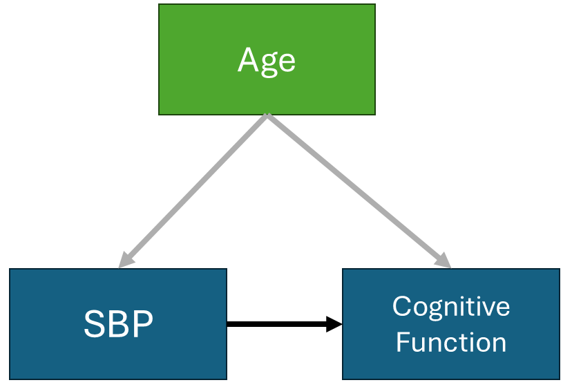
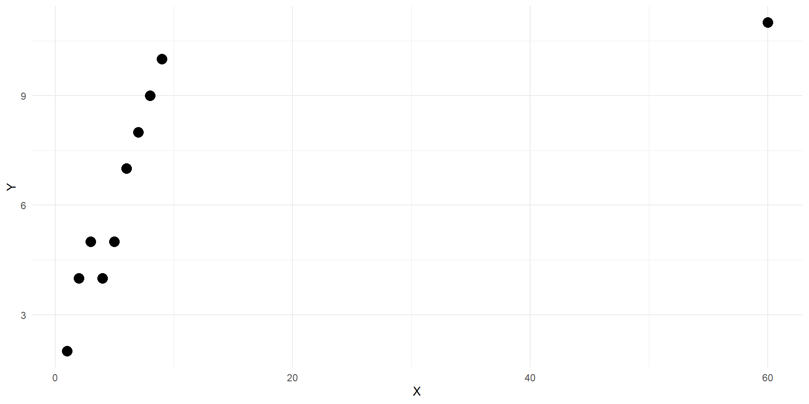
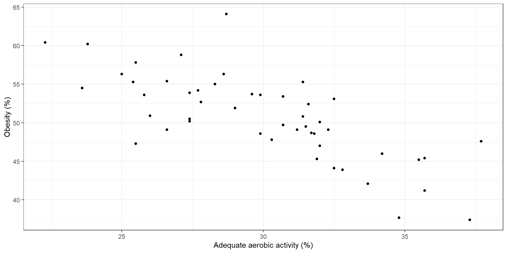
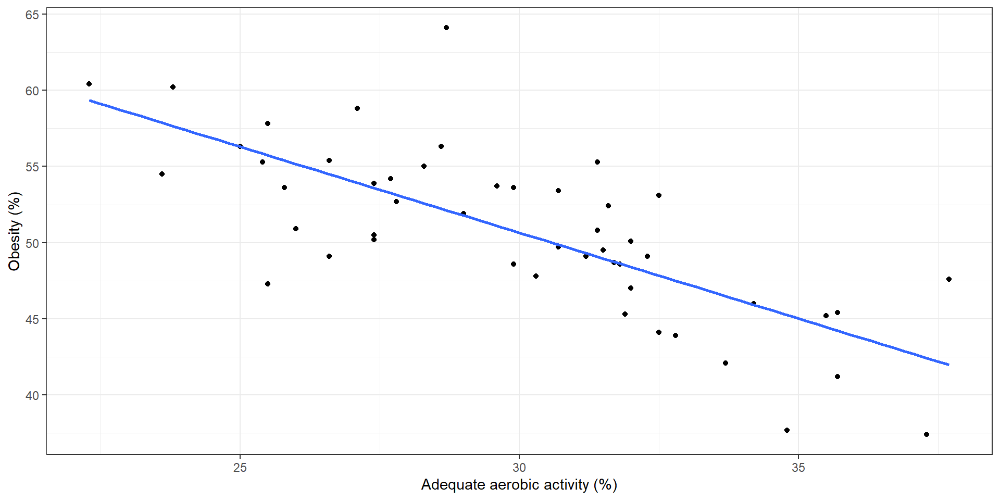
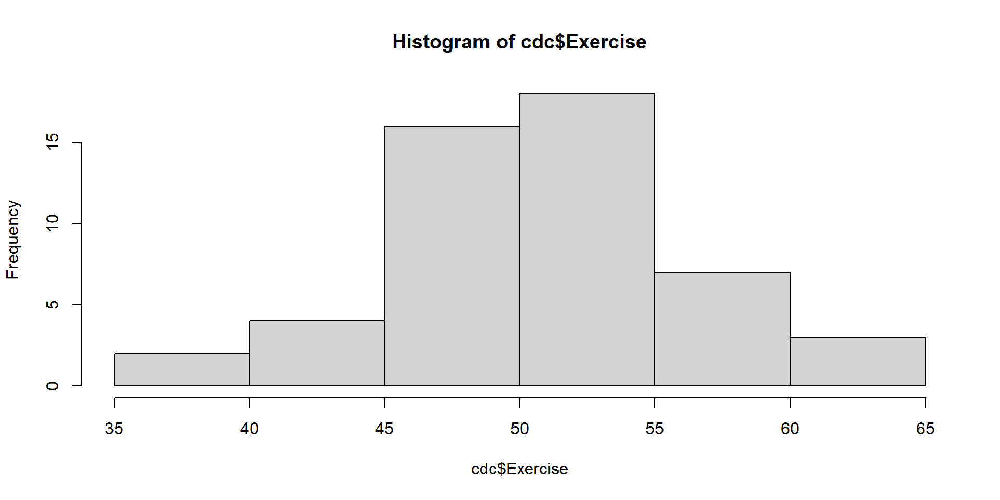

id age sbp cog
1 1 77 127 107
2 2 36 101 81
3 3 42 99 77
4 4 45 91 82
5 5 38 100 84
6 6 39 83 67Lecture 17: Introduction to linear regression
BIOS 600 - Spring 2026
Announcements
- Lab 7 (new lab) today - due this Friday April 10th
Topics covered in lab today
- In lab today we talk about two additional concepts
- Partial correlation
- Spearman’s correlation coefficients
Partial correlation
Let’s say I have a sample of 100 adults and I have:
- Age (in years)
- Cognitive function score - ranging from 0-100
- Systolic blood pressure (SBP)
Is higher SBP is associated with lower cognitive scores?
We anticipate
- Older individuals have lower cognitive function scores
- Older individuals have higher SBP
Partial correlation
- Age could be a confounder
- Age is associated with the exposure (SBP)
- Age is associated with the outcome (cognitive function)
- If I look at the association between SBP and cognitive function I might get a biased estimate
- Could look like two things are related when they aren’t
- Could look larger or smaller than it really is
Partial correlation

Partial correlation
Partial correlation is one approach
Isolates the direct association, preventing misleading results caused by confounding variables
Partial correlation removes age’s influence from both variables, then asks what’s left
We’ll get into other methods (and a bit more detail on these ideas later)
Partial correlation
Here’s the dataset, with age, sbp and cognitive function
Partial correlation
Pearson correlation between sbp and cogntive function
[1] 0.4637411Partial correlation
estimate p.value statistic n gp Method
1 0.1898445 0.05982332 1.904384 100 1 pearsonSpearman correlation
- Another way to measure correlation, ranging from -1 to 1
- Both measure the same basic idea — but they do it differently
- Pearson uses the actual values — it measures the strength of a linear relationship
- Spearman converts values to ranks first — it measures the strength of a monotonic relationship
Pearson vs. Spearman
- A linear relationship is always monotonic, but monotonic doesn’t have to be linear (e.g., exponential growth)
- Because it uses ranks, Spearman is less sensitive to outliers than Pearson
- Rule of thumb:
- Data is linear → use Pearson (more power)
- Data is skewed, has outliers, or the relationship is curved but consistently increasing/decreasing → use Spearman
Example: Pearson vs. Spearman

Example: Pearson vs. Spearman
Pearson Correlation
Spearman Correlation
Introduction to linear regression
- Now let’s get back to other methods. . .
Reading
P&G Chapter 18
OI: Chapter 8
Back to Lab 2…

Correlation and regression
Correlation measures the direction and strength of linear relationships
Regression can be used to further quantify these relationships
Often used to test whether there is an association between two variables
A regression line summarizes the relationship between explanatory/predictor variables (e.g., Exercise % or \(X\)) and response/outcome variables (e.g., Obesity % or \(Y\))
The fitted regression line can be used to predict the outcome for a given set of predictor values. Our predictions do have error, called residuals (vertical distance between observation and the regression line).
The least-squares regression line minimizes the sum of the squared errors.
Regression
In regression, we use one variable (or more) to try to predict values of another.
In simple linear regression, one variable \(Y\) is the response or outcome or dependent variable and the other \(X\) is the predictor or explanatory variable or independent variable.
Important: The regression of \(Y\) on \(X\) is not equal to the regression of \(X\) on \(Y\)
The regression of \(Y\) on \(X\) can be used to predict \(Y\) based on fixed values of \(X\).
Back to Lab 2…

We see the regression line relating exercise and obesity %
Points represent actual data values; note that the line is not a perfect fit
Code for previous slide
The linear model
The model is given by \(y_i=β_0+β_1x_i+ϵ_i\), where
\(y_i\) is the outcome (dependent variable) of interest
\(\beta_0\) is the intercept parameter
\(\beta_1\) is the slope parameter
\(x_i\) is the predictor variable
\(\epsilon_i\) is the error (like \(\beta_0\) and \(\beta_1\), it is not observed)
The \(i\) is an index of observations. So, each observation of the outcome is related to an observation of that individual’s value of the predictor.
The least squares model
Fitted line equation:
\[\hat y_i = \hat \beta_0 +\hat \beta_1 x_i\]
Residual:
\[\hat \epsilon_i = y_i - (\hat \beta_0 +\hat \beta_1 x_i) = y_i - \hat y_i\]
Least squares selects \(\hat β_0\) and \(\hat β_1\) such that the error sum of squares
\[\sum_{i=1}^n \hat \epsilon_i^2 = \sum_{i=1}^n (y_i - \hat y_i)^2\]
is minimized.
Review slope-intercept form of a line
Recall the slope-intercept form of a line, \(y=mx+b\).
\(b\) is the y-intercept, or where the line crosses the y-axis
- It is the predicted value of \(y\) when \(x = 0\)
\(m\) is the slope
- Which tells us the predicted increase in \(y\) when \(x\) changes by 1 unit
Review: formula of a line
Review
Consider the line \(y=3x+1\).
What value does \(y\) take when \(x=0\)?
As \(x\) increases by 1 unit, how much do we expect \(y\) to increase by?
- In statistics, we often represent the slope with \(β_1\) and the intercept with \(β_0\), and these values are usually not known but must be estimated.
Model output
Call:
lm(formula = Obesity ~ Exercise, data = cdc)
Residuals:
Min 1Q Median 3Q Max
-6.118 -1.150 -0.065 1.385 6.229
Coefficients:
Estimate Std. Error t value Pr(>|t|)
(Intercept) 54.79087 3.24772 16.871 < 2e-16 ***
Exercise -0.48991 0.06365 -7.697 6.34e-10 ***
---
Signif. codes: 0 '***' 0.001 '**' 0.01 '*' 0.05 '.' 0.1 ' ' 1
Residual standard error: 2.455 on 48 degrees of freedom
Multiple R-squared: 0.5524, Adjusted R-squared: 0.5431
F-statistic: 59.25 on 1 and 48 DF, p-value: 6.336e-10A neater way: tidymodels
- tidymodels: “tidyverse for modeling” — R packages that brings a consistent, unified workflow to modeling
- Once you learn this workflow, it scales to more complex models down the road without learning a whole new system
- Gives us the
tidy()function, which converts messylm()output into a clean, organized data frame - Much easier to read and work with than the default
summary()output
A neater way: kableExtra
- kableExtra is an R package for turning raw R output into clean, readable tables in your document
- Today we’re using it to format regression results so they’re easier to read and interpret
- Small amount of code, much more professional-looking and easier to read output
A neater way
| term | estimate | std.error | statistic | p.value |
|---|---|---|---|---|
| (Intercept) | 54.7908720 | 3.2477165 | 16.870583 | 0 |
| Exercise | -0.4899056 | 0.0636478 | -7.697129 | 0 |
- Can we do better?
Even better
| term | estimate | std.error | statistic | p.value |
|---|---|---|---|---|
| (Intercept) | 54.791 | 3.248 | 16.871 | 0 |
| Exercise | -0.490 | 0.064 | -7.697 | 0 |
- Note: p-values are not actually 0. They are just quite small so they get rounded to zero in the table.
Tip
- If you include a regression model in your labs and homework, display the output with
tidy()andkable()like this!
Intercept and slope
The intercept is the estimated mean outcome when the predictor is zero (does this make sense in context?)
The slope is the expected change in the outcome corresponding to a one-unit change in the predictor
Slope (\(\beta_1\)) Interpretation: For each percentage increase in Exercise, we expect the Obesity percentage to decrease by .48 on average
Tip
For all interpretations, remember to include units!
Example
For two states, identical except one has Exercise % = 45.4 and the other has Exercise % = 46.4
- State A: \(\hat{y}_{A} = 54.79 + (-0.49 \times 45.4) = 32.54\)
- State B: \(\hat{y}_{B} = 54.79 + (-0.49 \times 46.4) = 32.05\)
- Difference: \(32.54 - 32.05 = 0.49\)
Increasing Exercise % by one unit changes predicted Obesity % by exactly \(\hat{\beta}_1 = -0.49\)
Intercept interpretation
The technical intercept interpretation: When zero percent of the region gets adequate
Exercise, we would expect the percent of the region that is obese to be 54.79%.Does it make sense to interpret the intercept here?
Only interpret the intercept in a regression model if:
- the predictor can feasibly take values equal to or near zero, or
- there are values near zero in the observed data
Let’s check

Let’s check
- Since the predictor (
Exercise) does not feasibly take on values equal to zero (and we also checked that the lowest value in the dataset is 37.4%), we should not interpret the intercept.
Model assumptions
Assumptions of the model \(y_i = \beta_0 + \beta_1 x_1 + \epsilon_i\) include:
The outcomes \(y_i\) are independent. This is violated if our study contains repeated outcome measures on an individual, if siblings are enrolled, etc.
A linear relationship holds (though we can relax this to some extent)
For a specified value of \(x\), which is measured without error, \(y_i∼N(β_0+β_1x_i,σ^2)\). Note that this implies \(ϵ_i∼N(0,σ^2)\).
The variance \(σ^2\) is constant across all values of \(x\); this is called homogeneity of variance
Hypothesis testing
The primary hypothesis test of interest is usually \(H_0:β_1=0\) (There is no association between exercise and obesity percentage) versus \(H_1:β_1≠0\) (there is an association between exercise and obesity percentage.)
Under the null hypothesis, we can use a t-test to test this
- Same logic, same mechanics as the t-tests we’ve already seen — testing how likely is it see an estimate of \(\beta_1\) this extreme or more extreme under the \(H_{0}: \beta_1=0\)
R automatically tests this with the
lm()function, and provides the t-statistic and p-value in the output.
| term | estimate | std.error | statistic | p.value |
|---|---|---|---|---|
| (Intercept) | 54.791 | 3.248 | 16.871 | 0 |
| Exercise | -0.490 | 0.064 | -7.697 | 0 |
Given our t-statistic of -7.7 and p-value of <0.001, what might we conclude in our data?
Some additional output
The \(R-squared\) value indicates that exercise explains 55% of the variance of obesity.
\(R^2\) tells us about how much of the variability in obesity is explained by exercise; as it gets close to 1, the points get tighter around the regression line.
\(R^2\) ranges from 0 to 1
Predicted values
The regression equation can be used to get predicted means at any value of \(x\).
\(\hat y_i=\hat β_0+ \hat β_1x_i\), where we call \(\hat y\) the predicted value of \(y\) at a given value of \(x\) (what happened to the error term?).
Predicted values
- For the CDC data that predicts a state’s obesity percentage by its adequate exercise percentage, we have
\[\hat y_i = \hat β_0 - \hat β_1 x_i = 54.79 - 0.49 x_i\]
So, the predicted mean obesity percentage for a state where 50% of residents get adequate exercise is
\[\hat y_i = 54.79 - 0.49 (50) \]
We would predict an obesity percentage of approximately 30%. Note the importance of getting the units correct.
Recap
What is a linear regression model? How do we fit & visualize the model in R?
Slope, intercept and interpretations
Understand when it’s appropriate to interpret the intercept
Interpret \(R^2\) from regression output
Next class
We will learn how to check the regression model assumptions in R
Multiple regression